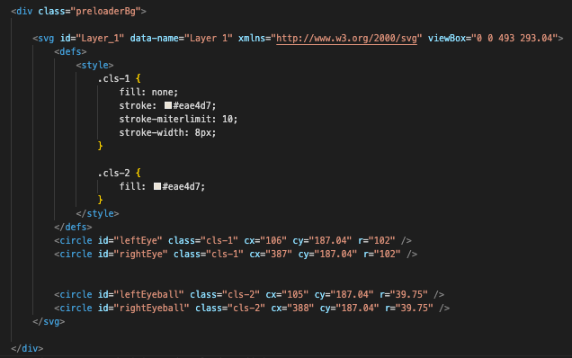
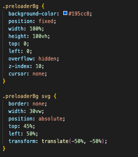
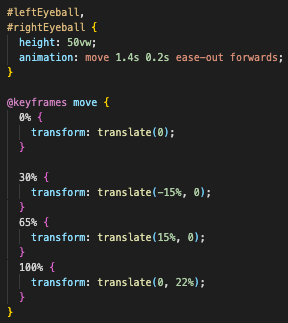
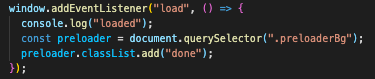
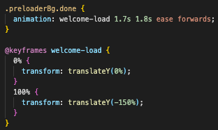
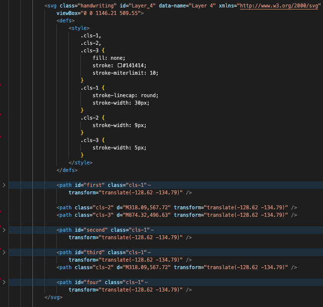
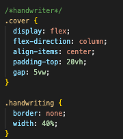
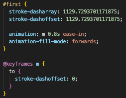

Why microinteractions
TEXT HERE
What are microinteractions
Micro-Interactions are like any other interactions with devices, which are used to communicate meaningful feedback to the users because a user has to constantly know what happens when an action is performed. It’s a human tendency to expect something to happen when you click a button, scroll a page, add an item to the cart, left swipe a card.
SVG basics
What is SVG - Scalable Vector Graphics
previously we have exported vectors and drawings in design programs such as Adobe Illustrator. But the content inside the SVGfile is code looking and working like HTML. This means we are able to code SVG directly in our HTMLfile.
important: Now that SVG are vectors and fluit we do not work with px but units. This is why the drawingboard here dont have any descriptopn but 100X100
Inside the SVG tag you can work with a wide array of elements. In this case a rectangle. SVG element reference
now that we have created an SVG file directly in the HTML we are able to animate it using CSS. It is just a matter of selecting the right elemet
This means we are able to animate the most crasy SVG files if we are able to select the right elements.
With this basic knowledge about SVG and how we are able to manipulate it I have created several microinteractions elements you can try out yourself.
Preloader
Click to see the preloaderCreate your own preloader
-
In illustrator I drew the SVG icon I wanted to animate. Here a set of eyes
i placed the svg in my HTML and arranged the different elements with 'id' tags. As you can see the svg has already been styled directly in the html. This styling are integrated in illustrator
 -
Go to you CSS file and style the preloader. make sure it takes up the entire screen. A nifty litle feature is to 'turn of' the curser while the preloader is on the screen
  -
Some preloaders works alone a information. informing the user that something IS actually happening. with these kind of loader informations. The animation is controled by JS. Where a 'removing-class is added the the 'container' with an event listener.
In this case the preloader works more as a animation that has to finish before the preloader disapears. This can be controled by CSS alone. But for the example the 'done' class are added to the preloader with JS
 
Thats it. Now you have animated your SVG and turned it into a preloader
Dive deeper
Handwriting
another commonly used SVG animation are the dasharray and dashoffset. styling and animatin of these can create a handwritten function
Click to see the handwriting-
Before styling and animating, the signature are created in illustrator. Here it is important to create the object by using the pentool.
-
Now the SVG are ready to be placed and arranged with 'ID' in the HTML.
 -
Now you animate each ID. In this example we are targeting the 'M' in the CSS. Add 'stroke-dasharray' and type the exact lenght of the path. And as a oponent add 'stroke-dashoffset' and type the same value.
calculate the exact lenght in the console log.
type: p=document.getElementById('first');
p.getTotalLength()  -
by moving the 'strike-dashoffset from 1129.7293701171875to 0the letter 'M' appear manipulated by the alocated CSS animation
-
Continue by targeting the next object in the CSS. If you want the handwriting finction the next animation in line should have a dalay and so forth.
Use the same concept to create microinteractions on i.e. hyperlinks
Click here to see the handwriting